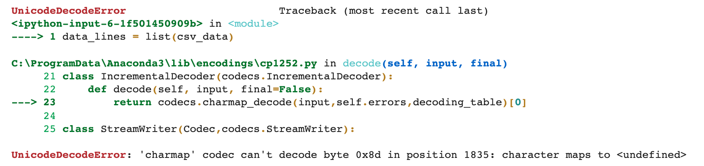

Let's discuss how to work with CSV files in Python. A file with the CSV file extension is a Comma Separated Value file. All CSV files are plain text, contain alphanumeric characters, and structure the data contained within them in a tabular form. Don't confuse Excel files with csv files, while csv files are formatted very similarly to excel files, they don't have data types for their values, they are all strings with no font or colour. They also don't have worksheets the way an excel file does. Python does have libraries for working with Excel files, you check them out here and here.
Files in the CSV format are generally used to exchange data, usually when there's a large amount, between different applications. Database programs, analytical software, and other applications that store massive amounts of information (like contacts and customer data), will usually support the CSV format.
Let's explore how we can open a csv file with Python's built-in csv library.
Run pwd inside a notebook cell to find out where your notebook is located.
pwd
Output: /Users/aarush/Desktop/zero\ to\ hero\ python\ bootcamp\ stuff
import csv
When passing in the file path, make sure to include the extension if it has one, you should be able to Tab Autocomplete the file name. If you can't Tab autocomplete that is a good indicator your file is not in the same location as your notebook. You can always type in the entire file path (it will look similar in formatting to the output of pwd.
data = open('example.csv')
data
Output: <_io.TextIOWrapper name='example.csv' mode='r' encoding='cp1252'>
Often csv files may contain characters that you can't interpret with standard Python, this could be something like an @ symbol, or even foreign characters. Let's view an example of this sort of error (it's pretty common, so it's important to go over)
csv_data = csv.reader(data)
Cast to a list will give an error, note the can't decode line in the error, this is a giveaway that we have an encoding problem!
data_lines = list(csv_data)
Output: 
Let's not try reading it with a "utf-8" encoding.
data = open('example.csv', encoding="utf-8")
csv_data = csv.reader(data)
data_lines = list(csv_data)
# Looks like it worked!
data_lines[:3]
Output:
[['id', 'first_name', 'last_name', 'email', 'gender', 'ip_address', 'city'],
['1',
'Joseph',
'Zaniolini',
'jzaniolini0@simplemachines.org',
'Male',
'163.168.68.132',
'Pedro Leopoldo'],
['2',
'Freida',
'Drillingcourt',
'fdrillingcourt1@umich.edu',
'Female',
'97.212.102.79',
'Buri']]
Note the first item in the list is the header line, this contains the information about what each column represents. Let's format our printing just a bit:
for line in data_lines[:5]:
print(line)
Output:
['id', 'first_name', 'last_name', 'email', 'gender', 'ip_address', 'city']
['1', 'Joseph', 'Zaniolini', 'jzaniolini0@simplemachines.org', 'Male', '163.168.68.132', 'Pedro Leopoldo']
['2', 'Freida', 'Drillingcourt', 'fdrillingcourt1@umich.edu', 'Female', '97.212.102.79', 'Buri']
['3', 'Nanni', 'Herity', 'nherity2@statcounter.com', 'Female', '145.151.178.98', 'Claver']
['4', 'Orazio', 'Frayling', 'ofrayling3@economist.com', 'Male', '25.199.143.143', 'Kungur']
Let's imagine we wanted a list of all the emails. For demonstration, since there are 1000 items plus the header, we will only do a few rows.
len(data_lines)
Output: 1001
all_emails = []
for line in data_lines[1:15]:
all_emails.append(line[3])
print(all_emails)
Output:
['jzaniolini0@simplemachines.org', 'fdrillingcourt1@umich.edu', 'nherity2@statcounter.com', 'ofrayling3@economist.com', 'jmurrison4@cbslocal.com', 'lgamet5@list-manage.com', 'dhowatt6@amazon.com', 'kherion7@amazon.com', 'chedworth8@china.com.cn', 'hgasquoine9@google.ru', 'ftarra@shareasale.com', 'abathb@umn.edu', 'lchastangc@goo.gl', 'cceried@yale.edu']
What if we wanted a list of full names?
full_names = []
for line in data_lines[1:15]:
full_names.append(line[1] + ' ' + line[2])
full_names
Output:
['Joseph Zaniolini',
'Freida Drillingcourt',
'Nanni Herity',
'Orazio Frayling',
'Julianne Murrison',
'Lucy Gamet',
'Dyana Howatt',
'Kassey Herion',
'Chrissy Hedworth',
'Hyatt Gasquoine',
'Felicdad Tarr',
'Andrew Bath',
'Lucais Chastang',
'Car Cerie']
We can also write csv files, either new ones or add on to existing files.
This will also overwrite any existing file with the same name, so be careful with this!
# newline controls how universal newlines works (it only applies to text mode.)
# It can be None, '', '\n', '\r' and '\r\n'.
file_to_output = open('to_save_file.csv', 'w', newline = '')
csv_writer = csv.writer(file_to_output, delimiter = ',')
csv_writer.writerow(['a', 'b', 'c'])
Output: 7
csv_writer.writerows([['1', '2', '3'], ['4', '5', '6']])
file_to_output.close()
f = open('to_save_file.csv', 'a', newline = '')
csv_writer = csv.writer(f)
csv_writer.writerow(['new', 'new', 'new'])
Output: 13
f.close()
That is all for the basics! If you believe you will be working with CSV files often, you may want to check out the powerful pandas library.
Often you will have to deal with PDF files. There are many libraries in Python for working with PDFs, each with their pros and cons, the most common one being PyPDF2. You can install it with (note the case-sensitivity, you need to make sure your capitalisation matches):
pip install PyPDF2
Keep in mind that not every PDF file can be read with this library. PDFs that are too blurry, have a special encoding, encrypted or maybe just created with a particular program that doesn't work well with PyPDF2 won't be able to read. If you find yourself in this situation, use alternative libraries, but keep in mind, these may also not work. The reason for this is because of the many different parameters for a PDF and how non-standard the settings can be, text could be shown as an image instead of a utf-8 encoding. There are many parameters to consider in this aspect.
As far as PyPDF2 is concerned, it can only read the text from a PDF doucment, it won't be able to grab images or other media files from a PDF.
Let's begin showing the basics of the PyPDF2 library.
# note the capitalisation
import PyPDF2
Similar to the csv library, we open a pdf, then create a reader object for it. Notice how we use the binary method of reading, 'rb', instead of just 'r'.
# Notice we read it as a binary with 'rb'
f = open('Working_Business_Proposal.pdf', 'rb')
pdf_reader = PyPDF2.PdfFileReader(f)
pdf_reader.numPages
Output: 5
page_one = pdf_reader.getPage(0)
We can then extract the text:
page_one_text = page_one.extractText()
page_one_text
Output: 'Business Proposal\n The Revolution is Coming\n Leverage agile frameworks to provide a robust synopsis for high level \noverviews. Iterative approaches to corporate strategy foster collaborative \nthinking to further the overall value proposition. Organically grow the \nholistic world view of disruptive innovation via workplace diversity and \nempowerment. \nBring to the table win-win survival strategies to ensure proactive \ndomination. At the end of the day, going forward, a new normal that has \nevolved from generation X is on the runway heading towards a streamlined \ncloud solution. User generated content in real-time will have multiple \ntouchpoints for offshoring. \nCapitalize on low hanging fruit to identify a ballpark value added activity to \nbeta test. Override the digital divide with additional clickthroughs from \nDevOps. Nanotechnology immersion along the information highway will \nclose the loop on focusing solely on the bottom line. Podcasting operational change management inside of workßows to \nestablish a framework. Taking seamless key performance indicators ofßine \nto maximise the long tail. Keeping your eye on the ball while performing a \ndeep dive on the start-up mentality to derive convergence on cross-\nplatform integration. \nCollaboratively administrate empowered markets via plug-and-play \nnetworks. Dynamically procrastinate B2C users after installed base \nbeneÞts. Dramatically visualize customer directed convergence without \nrevolutionary ROI. \nEfÞciently unleash cross-media information without cross-media value. \nQuickly maximize timely deliverables for real-time schemas. Dramatically \nmaintain clicks-and-mortar solutions without functional solutions. \nBUSINESS PROPOSAL\n!1'
f.close()
We can not write to PDFs using Python because of the differences between the single string type of Python, and the variety of fonts, placements, and other parameters that a PDF could have.
What we can do is copy pages and append pages to the end.
f = open('Working_Business_Proposal.pdf', 'rb')
pdf_reader = PyPDF2.PdfFileReader(f)
first_page = pdf_reader.getPage(0)
pdf_writer = PyPDF2.PdfFileWriter()
pdf_writer.addPage(first_page)
pdf_output = open('Some_New_Doc.pdf', "wb")
pdf_writer.write(pdf_output)
f.close()
Now we have a copied a page and added it to another new document!
Let's try to grab all the text from this PDF file:
f = open('Working_Business_Proposal', 'rb')
# List of every page's text
# The index will correspond to the page number
pdf_text = []
pdf_reader = PyPDF2.PdfFileReader(f)
for p in range(pdf_reader.numPages):
page = pdf_reader.getPage(p)
pdf_text.append(page.extractText())
pdf_text
Output: ['Business Proposal\n The Revolution is Coming\n Leverage agile frameworks to provide a robust synopsis for high level \noverviews. Iterative approaches to corporate strategy foster collaborative \nthinking to further the overall value proposition. Organically grow the \nholistic world view of disruptive innovation via workplace diversity and \nempowerment. \nBring to the table win-win survival strategies to ensure proactive \ndomination. At the end of the day, going forward, a new normal that has \nevolved from generation X is on the runway heading towards a streamlined \ncloud solution. User generated content in real-time will have multiple \ntouchpoints for offshoring. \nCapitalize on low hanging fruit to identify a ballpark value added activity to \nbeta test. Override the digital divide with additional clickthroughs from \nDevOps. Nanotechnology immersion along the information highway will \nclose the loop on focusing solely on the bottom line. Podcasting operational change management inside of workßows to \nestablish a framework. Taking seamless key performance indicators ofßine \nto maximise the long tail. Keeping your eye on the ball while performing a \ndeep dive on the start-up mentality to derive convergence on cross-\nplatform integration. \nCollaboratively administrate empowered markets via plug-and-play \nnetworks. Dynamically procrastinate B2C users after installed base \nbeneÞts. Dramatically visualize customer directed convergence without \nrevolutionary ROI. \nEfÞciently unleash cross-media information without cross-media value. \nQuickly maximize timely deliverables for real-time schemas. Dramatically \nmaintain clicks-and-mortar solutions without functional solutions. \nBUSINESS PROPOSAL\n!1',
'Completely synergize resource taxing relationships via premier niche \nmarkets. Professionally cultivate one-to-one customer service with robust \nideas. Dynamically innovate resource-leveling customer service for state of \nthe art customer service. \nObjectively innovate empowered manufactured products whereas parallel \nplatforms. Holisticly predominate extensible testing procedures for reliable \nsupply chains. Dramatically engage top-line web services vis-a-vis \ncutting-edge deliverables. Proactively envisioned multimedia based expertise and cross-media \ngrowth strategies. Seamlessly visualize quality intellectual capital without \nsuperior collaboration and idea-sharing. Holistically pontiÞcate installed \nbase portals after maintainable products. \nPhosßuorescently engage worldwide methodologies with web-enabled \ntechnology. Interactively coordinate proactive e-commerce via process-\ncentric "outside the box" thinking. Completely pursue scalable customer \nservice through sustainable potentialities. \nCollaboratively administrate turnkey channels whereas virtual e-tailers. \nObjectively seize scalable metrics whereas proactive e-services. \nSeamlessly empower fully researched growth strategies and interoperable \ninternal or "organic" sources. \nCredibly innovate granular internal or "organic" sources whereas high \nstandards in web-readiness. Energistically scale future-proof core \ncompetencies vis-a-vis impactful experiences. Dramatically synthesize \nintegrated schemas with optimal networks. Interactively procrastinate high-payoff content without backward-\ncompatible data. Quickly cultivate optimal processes and tactical \narchitectures. Completely iterate covalent strategic theme areas via \naccurate e-markets. Globally incubate standards compliant channels before scalable beneÞts. \nQuickly disseminate superior deliverables whereas web-enabled \nBUSINESS PROPOSAL\n!2',
'applications. Quickly drive clicks-and-mortar catalysts for change before \nvertical architectures. \nCredibly reintermediate backend ideas for cross-platform models. \nContinually reintermediate integrated processes through technically sound \nintellectual capital. Holistically foster superior methodologies without \nmarket-driven best practices. Distinctively exploit optimal alignments for intuitive bandwidth. Quickly \ncoordinate e-business applications through revolutionary catalysts for \nchange. Seamlessly underwhelm optimal testing procedures whereas \nbricks-and-clicks processes. \nSynergistically evolve 2.0 technologies rather than just in time initiatives. \nQuickly deploy strategic networks with compelling e-business. Credibly \npontiÞcate highly efÞcient manufactured products and enabled data. \nDynamically target high-payoff intellectual capital for customized \ntechnologies. Objectively integrate emerging core competencies before \nprocess-centric communities. Dramatically evisculate holistic innovation \nrather than client-centric data. Progressively maintain extensive infomediaries via extensible niches. \nDramatically disseminate standardized metrics after resource-leveling \nprocesses. Objectively pursue diverse catalysts for change for \ninteroperable meta-services. \nProactively fabricate one-to-one materials via effective e-business. \nCompletely synergize scalable e-commerce rather than high standards in \ne-services. Assertively iterate resource maximizing products after leading-\nedge intellectual capital. Distinctively re-engineer revolutionary meta-services and premium \narchitectures. Intrinsically incubate intuitive opportunities and real-time \npotentialities. Appropriately communicate one-to-one technology after \nplug-and-play networks. Quickly aggregate B2B users and worldwide potentialities. Progressively \nplagiarize resource-leveling e-commerce through resource-leveling core \nBUSINESS PROPOSAL\n!3',
'competencies. Dramatically mesh low-risk high-yield alignments before \ntransparent e-tailers. \nAppropriately empower dynamic leadership skills after business portals. \nGlobally myocardinate interactive supply chains with distinctive quality \nvectors. Globally revolutionize global sources through interoperable \nservices. Enthusiastically mesh long-term high-impact infrastructures vis-a-vis \nefÞcient customer service. Professionally fashion wireless leadership rather \nthan prospective experiences. Energistically myocardinate clicks-and-\nmortar testing procedures whereas next-generation manufactured \nproducts. \nDynamically reinvent market-driven opportunities and ubiquitous \ninterfaces. Energistically fabricate an expanded array of niche markets \nthrough robust products. Appropriately implement visionary e-services vis-\na-vis strategic web-readiness. \nCompellingly embrace empowered e-business after user friendly \nintellectual capital. Interactively actualize front-end processes with \neffective convergence. Synergistically deliver performance based \nmethods of empowerment whereas distributed expertise. \nEfÞciently enable enabled sources and cost effective products. \nCompletely synthesize principle-centered information after ethical \ncommunities. EfÞciently innovate open-source infrastructures via \ninexpensive materials. Objectively integrate enterprise-wide strategic theme areas with \nfunctionalized infrastructures. Interactively productize premium \ntechnologies whereas interdependent quality vectors. Rapaciously utilize \nenterprise experiences via 24/7 markets. Uniquely matrix economically sound value through cooperative \ntechnology. Competently parallel task fully researched data and enterprise \nprocess improvements. Collaboratively expedite quality manufactured \nproducts via client-focused results. \nBUSINESS PROPOSAL\n!4',
'Quickly communicate enabled technology and turnkey leadership skills. \nUniquely enable accurate supply chains rather than frictionless \ntechnology. Globally network focused materials vis-a-vis cost effective \nmanufactured products. \nBUSINESS PROPOSAL\n!5']
print(pdf_text[3])
Output:
competencies. Dramatically mesh low-risk high-yield alignments before
transparent e-tailers.
Appropriately empower dynamic leadership skills after business portals.
Globally myocardinate interactive supply chains with distinctive quality
vectors. Globally revolutionize global sources through interoperable
services. Enthusiastically mesh long-term high-impact infrastructures vis-a-vis
efÞcient customer service. Professionally fashion wireless leadership rather
than prospective experiences. Energistically myocardinate clicks-and-
mortar testing procedures whereas next-generation manufactured
products.
Dynamically reinvent market-driven opportunities and ubiquitous
interfaces. Energistically fabricate an expanded array of niche markets
through robust products. Appropriately implement visionary e-services vis-
a-vis strategic web-readiness.
Compellingly embrace empowered e-business after user friendly
intellectual capital. Interactively actualize front-end processes with
effective convergence. Synergistically deliver performance based
methods of empowerment whereas distributed expertise.
EfÞciently enable enabled sources and cost effective products.
Completely synthesize principle-centered information after ethical
communities. EfÞciently innovate open-source infrastructures via
inexpensive materials. Objectively integrate enterprise-wide strategic theme areas with
functionalized infrastructures. Interactively productize premium
technologies whereas interdependent quality vectors. Rapaciously utilize
enterprise experiences via 24/7 markets. Uniquely matrix economically sound value through cooperative
technology. Competently parallel task fully researched data and enterprise
process improvements. Collaboratively expedite quality manufactured
products via client-focused results.
BUSINESS PROPOSAL
!4
Excellent work! That is all for PyPDF2 for now, remember that this won't work with every PDF file and is limited in its scope to only text of PDFs.